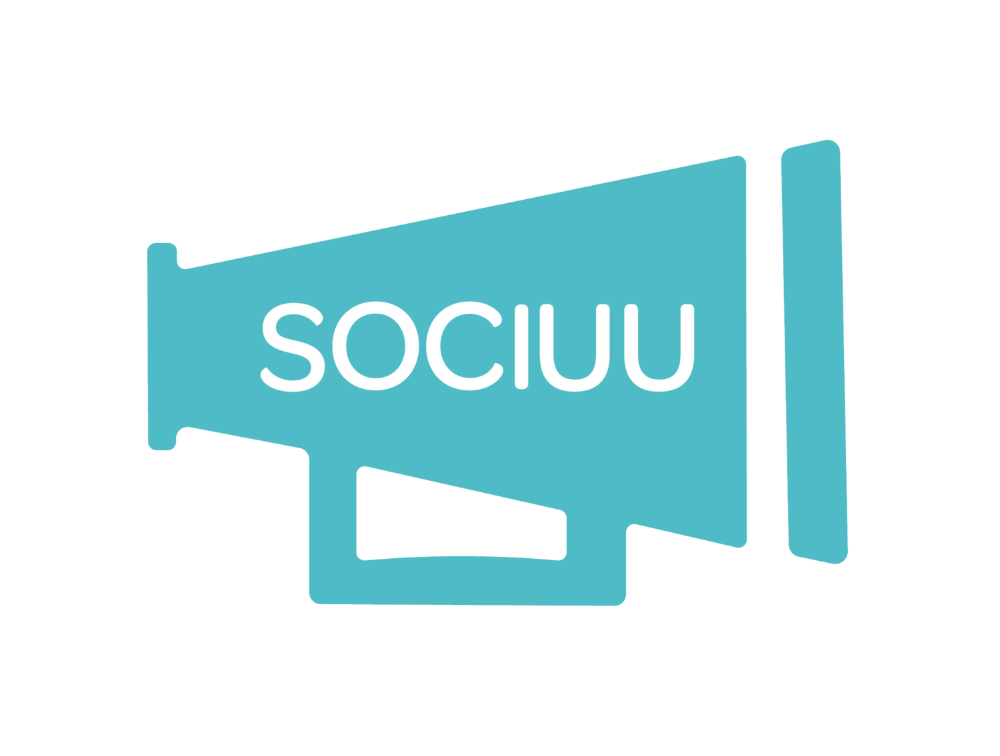
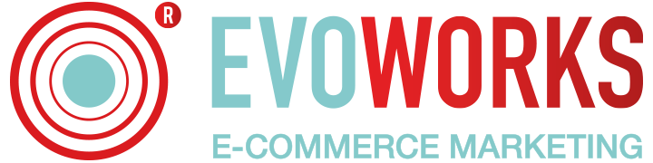
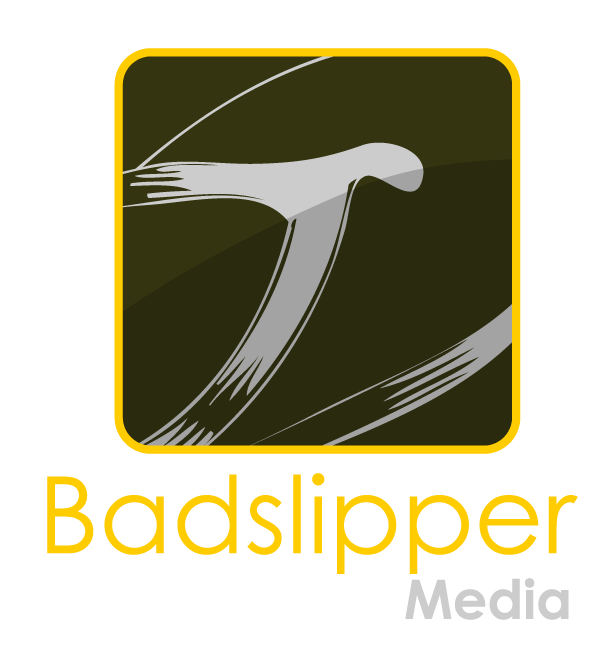

Van merk tot mens. Van mens tot mens.
Online communicatie gaat vandaag de dag te vaak van beeldscherm tot beeldscherm. NewPro maakt daar graag iets mooiers van; wij willen communiceren van mens tot mens. Met een écht gezicht, een échte stem en een warm gevoel. Zo bouwen we aan oprecht vertrouwen tussen uw organisatie en uw publiek.
Nijmegen
Eigen Productie Studio
15+ Jaar
Ervaring in Content & Media
100%
Turn-Key Ontzorging

Waarom NewPro Anders Werkt
Wij geloven niet in vluchtige advertenties of ingewikkelde uurtje-factuurtje contracten. Wij bouwen een continu contentfundament.
Van Merk tot Mens
Mensen doen zaken met mensen, niet met anonieme logo's. Wij voorzien uw merk van een herkenbaar gezicht en een warme, overtuigende tone-of-voice.
Dedicated Acteurs
Geen wisselende freelancers. Wij casten professionele acteurs die uw vaste merkambassadeurs worden en uw brancheterminologie feilloos beheersen.
Turn-Key Ontzorging
Van brainstorm en scriptwriting tot studioshoot, professionele nabewerking, podcasts en social snippets: u hoeft enkel uw inhoudelijke input te geven.
Vaste Formule
Vaste maandelijkse content output tegen een transparante all-in abonnementsprijs. Geen verrassingen achteraf, wel continue zichtbaarheid.
De Enige Echte New Pro's
Ons vaste team van regisseurs, schrijvers, audio-engineers en vormgevers in Nijmegen. Energiek, deskundig en altijd klaar voor een lach.
 EindBaas
EindBaas
Chris
Met ruim 15 jaar ervaring in media en merkbouwen zorgt Chris voor de scherpe strategische visie en het ontzorgen van onze opdrachtgevers.
 Energiebom
Energiebom
Raoul
Brengt ongekende energie op elke set. Zorgt dat elke geïnterviewde en acteur ontspannen, enthousiast en krachtig voor de camera staat.
 Auteur & Redacteur
Auteur & Redacteur
Marijke
Specialist in het vertalen van complexe bedrijfsprocessen naar heldere, meeslepende verhalen en vlijmscherpe videoscripts.
 Stekkerdoos
Stekkerdoos
Pepijn
De man achter het perfecte geluid. Van akoestische microfoonplaatsing tot kristalheldere mastering voor Spotify en YouTube.
 Illustratie Magie
Illustratie Magie
Lydia
Geeft elk videoformat een onweerstaanbare visuele identiteit met maatwerk animaties, lower-thirds en grafische overlays.
Hoe Wij Samenwerken
Een soepel 4-stappen proces dat minimale tijd van uw team vraagt en maximaal resultaat oplevert.
Kennismaken
Kennismaken gaat over ontmoeten, van mens tot mens. Jij leert ons kennen, en wij verdiepen ons grondig in uw bedrijf, boodschap en doelen.
Concept & Casting
We bepalen de ideale formats en selecteren samen de professionele acteur die uw merk representeert en bij uw doelgroep past.
Opnames in Studio
Eén efficiënte opnamedag per kwartaal of maand in onze studio in Nijmegen. Ontspannen, professioneel en volledig ontzorgd.
Oplevering & Distributie
Snelle oplevering van kant-en-klare video's, reels en podcast episodes inclusief ondertitels en publicatieteksten.
Vertrouwd door Toonaangevende Partners
Samen met onze netwerkpartners tillen we de contentproductie en distributie van Europese B2B organisaties naar het hoogste niveau.

Toonaangevend Deens Employee Advocacy platform dat NewPro inschakelt voor strategische thought-leadership videoseries in Europa.

Specialist in logistieke e-commerce en supply chain optimalisatie; zet NewPro acteurs in voor het helder toelichten van complexe proposities.

Creatief mediabureau en co-productiepartner voor high-end visual storytelling, geluidsontwerp en geavanceerde nabewerking.
Ontmoeten van mens tot mens
Wilt u ontdekken hoe video's, podcasts en een vaste acteur uw merk laten opvallen? Wij nodigen u van harte uit voor een kop koffie in onze studio in Nijmegen of een vrijblijvende online kennismaking.
Nijmegen, Gelderland, Nederland
(+31) 06-15878547
info@newpro.nl
Plan een Kennismaking
Vul het formulier in en we reageren binnen 24 uur.